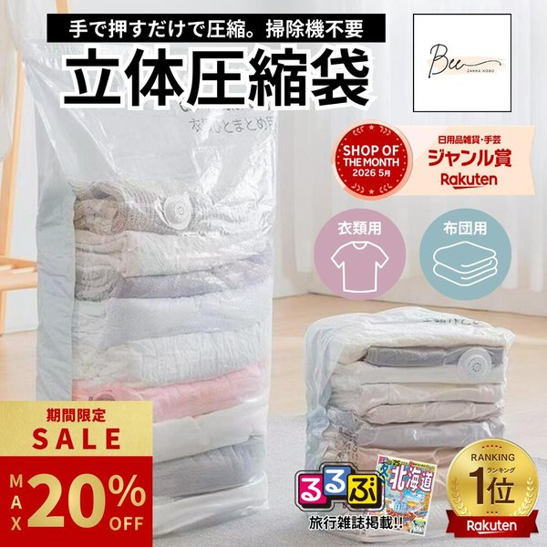
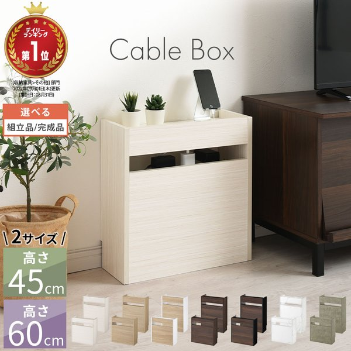
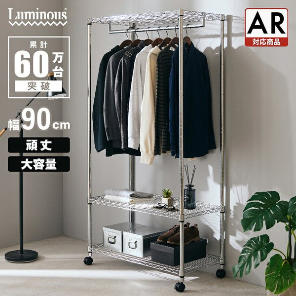
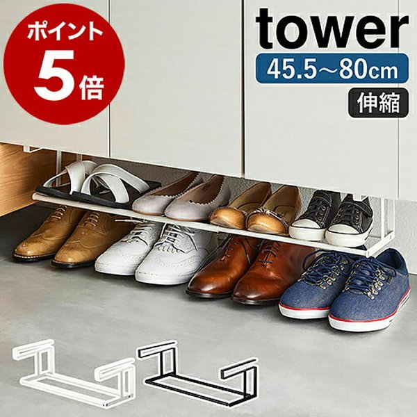
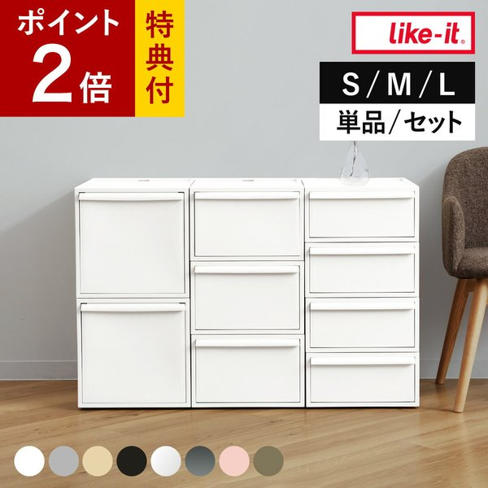
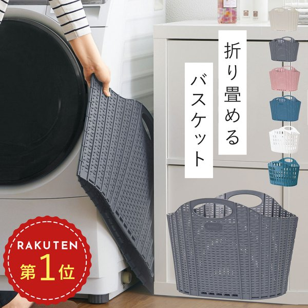
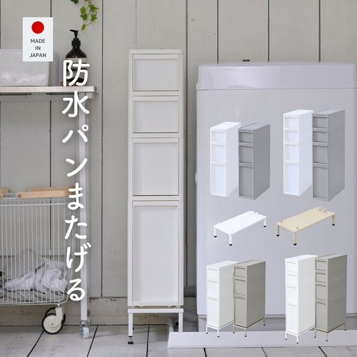
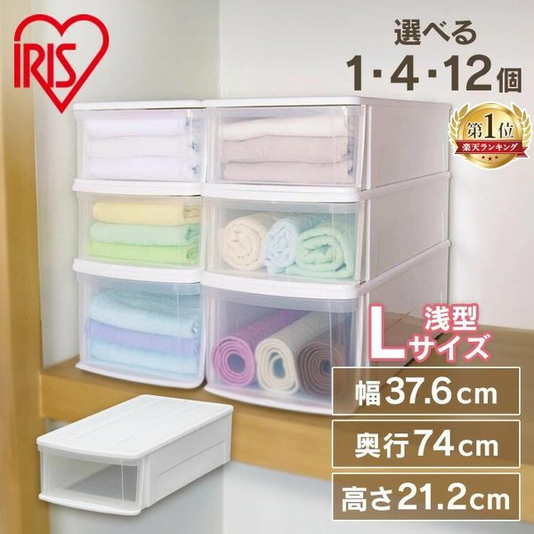
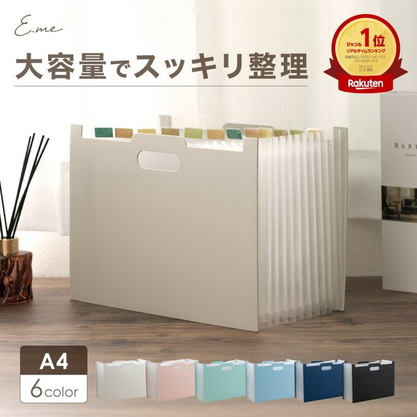

【2026年最新】年末までに部屋が劇的に片付く！リビング・クローゼット最強収納グッズ10選
気づけばリビングに物が増え、クローゼットはパンパン、玄関には靴があふれている──年末の大掃除で毎年同じ場所を片付けていませんか。
片付かない原因の多くは「しまう場所が決まっていない」こと。収納グッズで定位置をつくってしまえば、あとは戻すだけになり、部屋が崩れにくくなります。
本記事では、リビング・クローゼット・玄関・書類まわりをすっきりさせる収納グッズ10選を、実際の価格とレビュー評価つきで写真付き紹介します。
- おすすめ10選 スペック・特徴比較表
- BEST 1｜扉付きブックシェルフ 幅90 2個セット A4対応
- BEST 2｜立体圧縮袋 布団・衣類用（掃除機不要）
- BEST 3｜ケーブルボックス スリム ルーター収納 木製
- BEST 4｜ハンガーラック 幅90 棚付き キャスター付き
- BEST 5｜浮かせる伸縮シューズラック tower
- BEST 6｜クローゼットシステム 収納ケース 引き出し S/M/L
- BEST 7｜ランドリーバスケット 38L／20L 折りたたみ
- BEST 8｜隙間収納 18cm幅 引出し4段／3段
- BEST 9｜収納チェスト クリア 引き出し式 積み重ね可能
- BEST 10｜ドキュメントスタンド A4 ファイルボックス 伸縮仕切り
- 【読者負担0円】買わなくても得する無料サービス
- まとめ：生活をラクにする最初の一歩
| 順位 | 商品名 | ブランド | 最大の特徴・おすすめ理由 | 総合評価 |
|---|---|---|---|---|
| BEST 1 | 扉付きブックシェルフ 幅90 2個セット A4対応 | リビング収納（本棚タイプ） | 扉付きで生活感を隠せる | 4.11 ★ |
| BEST 2 | 立体圧縮袋 布団・衣類用（掃除機不要） | 立体圧縮袋 | 掃除機不要で手軽に圧縮 | 4.55 ★ |
| BEST 3 | ケーブルボックス スリム ルーター収納 木製 | 木製ケーブルボックス | ルーターごと隠せる大きさ | 4.28 ★ |
| BEST 4 | ハンガーラック 幅90 棚付き キャスター付き | ドウシシャ（Luminous） | 棚付きで収納力が高い | 4.65 ★ |
| BEST 5 | 浮かせる伸縮シューズラック tower | 山崎実業（tower） | 伸縮式で玄関の幅に合わせられる | 4.56 ★ |
| BEST 6 | クローゼットシステム 収納ケース 引き出し S/M/L | ライクイット（like-it） | サイズ展開が豊富で隙間なく収まる | 4.70 ★ |
| BEST 7 | ランドリーバスケット 38L／20L 折りたたみ | 折りたたみランドリーバスケット | 折りたためて場所を取らない | 4.56 ★ |
| BEST 8 | 隙間収納 18cm幅 引出し4段／3段 | 隙間ストッカー | 18cmの隙間に収まるスリム設計 | 4.56 ★ |
| BEST 9 | 収納チェスト クリア 引き出し式 積み重ね可能 | アイリスオーヤマ | クリアで中身が分かる | 4.63 ★ |
| BEST 10 | ドキュメントスタンド A4 ファイルボックス 伸縮仕切り | ファイルスタンド | 伸縮する仕切りで書類を仕分け | 4.60 ★ |
扉付きブックシェルフ 幅90 2個セット A4対応

フラップ扉付きで、収納物を隠しながらすっきり見せられる本棚。A4ファイルも入る奥行きで、リビングの書類や子どもの絵本までまとめて片付きます。2個セットなので、並べても圧迫感が出にくい設計です。 楽天市場での実売価格は約9,650円（2026年11月時点）。
- 扉付きで生活感を隠せる
- A4対応で書類も収まる
- 2個セットでレイアウト自由
- 組み立てに多少の時間がかかる
立体圧縮袋 布団・衣類用（掃除機不要）

掃除機を使わず、手で丸めて空気を抜ける立体圧縮袋。かさばる布団や冬物衣類をクローゼットの上段にまとめられ、収納スペースを一気に確保できます。大掃除のタイミングで使うのがおすすめ。 楽天市場での実売価格は約1,480円（2026年11月時点）。
- 掃除機不要で手軽に圧縮
- 布団も衣類もまとめて収納
- 大掃除の時短に直結
- 完全に真空にはならない
ケーブルボックス スリム ルーター収納 木製

リビングの配線をまとめて隠せる木製ケーブルボックス。ルーターも収まる大きめサイズで、可動棚付きだから機器の出し入れも簡単です。木目調なので、家具になじんで生活感が出ません。 楽天市場での実売価格は約4,280円（2026年11月時点）。
- ルーターごと隠せる大きさ
- 可動棚で機器の出し入れがラク
- 木目調でインテリアになじむ
- 放熱のために詰め込みすぎないこと
ハンガーラック 幅90 棚付き キャスター付き

省スペースで大容量のスチールハンガーラック。棚付きでバッグや靴箱も置け、キャスター付きなので掃除のときも動かせます。ワードローブ代わりにも使える頼れる一台です。 楽天市場での実売価格は約5,980円（2026年11月時点）。
- 棚付きで収納力が高い
- キャスターで移動がラク
- 頑丈なスチール製
- 耐荷重を超える荷物は避ける
浮かせる伸縮シューズラック tower

玄関の靴を壁に引っ掛けて浮かせるシューズラック。伸縮するので靴箱の下や狭い玄関にも合わせられ、床に靴が散らばりません。来客時にさっと片付くのが気持ちいい。 楽天市場での実売価格は約3,520円（2026年11月時点）。
- 伸縮式で玄関の幅に合わせられる
- 靴を浮かせて床掃除がラク
- 引っ掛けるだけで設置完了
- 靴のサイズによっては入らない
クローゼットシステム 収納ケース 引き出し S/M/L

サイズを組み合わせてクローゼットにぴったり収まる引き出し収納。日本製でスライドも滑らか、衣類を立てて収めれば出し入れが一気にラクになります。サイズ展開が豊富で、隙間なく積み上げられるのが強み。 楽天市場での実売価格は約3,520円（2026年11月時点）。
- サイズ展開が豊富で隙間なく収まる
- 引き出しの滑りがよく毎日快適
- 日本製の安心感
- サイズ選びは採寸が必須
ランドリーバスケット 38L／20L 折りたたみ

使わないときはぺたんこに折りたためるランドリーバスケット。洗濯機横のわずかな隙間に置けるスリム形状で、持ち手付きだから洗濯機までの移動もラクです。 楽天市場での実売価格は約2,550円（2026年11月時点）。
- 折りたためて場所を取らない
- 洗濯機横に置けるスリム設計
- 持ち手付きで運びやすい
- 容量いっぱいに入れると型崩れしやすい
隙間収納 18cm幅 引出し4段／3段

洗濯機の防水パンや冷蔵庫横など、18cmの隙間に差し込めるスリムストッカー。段差をまたげる専用脚付きで、凹凸のある床でも安定します。中身が透けないので、生活感が出やすい場所でも安心。 楽天市場での実売価格は約3,999円（2026年11月時点）。
- 18cmの隙間に収まるスリム設計
- 段差をまたげる専用脚付き
- 中身が透けない仕様
- 引き出しの耐荷重は軽め
収納チェスト クリア 引き出し式 積み重ね可能

中身が見えるクリアな引き出しで、何が入っているか一目で分かる収納チェスト。押し入れやクローゼットで最大4段まで積み重ねられ、衣類の季節替えにも便利です。 楽天市場での実売価格は約2,780円（2026年11月時点）。
- クリアで中身が分かる
- 最大4段まで積み重ね可能
- 押し入れの高さに合わせやすい
- 透明なので隠したい物には不向き
ドキュメントスタンド A4 ファイルボックス 伸縮仕切り

じゃばら式の仕切りで、書類の量に合わせて幅が変わるファイルスタンド。A4の書類やチラシ、届いた郵便物をまとめておけるので、リビングの「とりあえず置き」がなくなります。 楽天市場での実売価格は約1,780円（2026年11月時点）。
- 伸縮する仕切りで書類を仕分け
- A4がぴったり収まる
- リビングの書類整理に最適
- 大量の書類には別途ファイルが必要
この記事の商品を買う前に、まずは無料で得する選択肢をチェック。どれも登録・利用は0円で、無料期間中に解約すれば料金はかかりません。読みたい雑誌がある人、ポイントを貯めたい人、アンケートなら気軽という人、それぞれに合うものを選べます。
初回31日無料・無料期間中に解約すれば0円 → 楽天ポイントモール｜登録無料で毎日ポイ活
買い物なしでもポイントが貯まる無料サービス → 楽天インサイト｜アンケートに答えてポイント
登録無料・すきま時間のアンケートで貯まる → 楽天カード｜年会費永年無料
新規発行・年会費ずっと0円 →
4つのサービスの違いと使い分けは「出費0円で得する！買わずにポイントが貯まる無料サービス厳選4選」でまとめています。
💡 まとめ：生活をラクにする最初の一歩
片付けは、収納グッズを買い足すことより「どこに何をしまうか」を決めることが本質です。扉付きラックで生活感を隠し、圧縮袋でかさを減らし、隙間収納でデッドスペースを活かす。この3つを押さえれば、年末の大掃除がぐっとラクになります。
楽天市場では「5と0のつく日」や「お買い物マラソン」などのキャンペーンに合わせて購入すると、ポイント還元が最大化してお得に手に入ります。ぜひチェックしてみてくださいね。